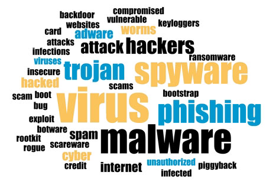
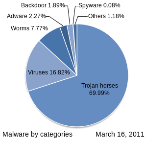

Un malware (malicious software) este un program conceput cu intentii rele (software malitios care vrea sa ne fure, distruga sau corupa datele stocate pe dispozitivele noastre).

Foarte multa lume foloseste termenul generic de virus, care nu este neaparat corect pentru ca pot
exista mai multe tipuri de programe periculoase. Iata mai jos (doar) o partea dintre acestea:
1.Virusi
2.Troieni
3.Viermi
4.Ransomware
5.Spyware
6.Adware
Iata in imaginea de mai jos extrasa de pe Wikipedia, proportia (in 2011) a malware-ului din Internet. De atunci si pana acum multe lucruri sau schimbat, dar este interesant ca avem o astfel de ierarhie cu cele mai intalnite tipuri de malware-uri.

Si acum sa luam cateva dintre aceste malware-uri si sa discutam mai in detaliu despre ele:
1.Virusi
Un virus este un program cu care totii suntem obisnuiti. Fie ca am avut calculatorul infectat cu un virus sau ca am auzit/vazut la altcineva, stim ca acesti virus pot fi cu adevarat periculosi pentru noi (si mai ales pentru datele noastre stocate pe calculator – elementul cel mai important pentru noi).
Programatorii de virusi profita de vulnerabilitatile existente pe diferite sisteme de operare (in mod special Windows) si scriu software care sa profite de acestea (si de utilizatorii acestor dispozitive).
2.Trojeni
Un troian este un tip de program conceput sa para in folosul celui care il foloseste, dar in spate exista un cod malitios care are cu totul alte intentii. Aceste tipuri de programe se intalnesc cel mai des in Internet (dupa cum ai putut vedea si in imaginea de mai sus) si sunt folosite pentru ca sunt usor de mascat in fata unui utilizator neexperimentat.
Astfel in momentul (primei) rularii programului, troianul este instalat si se va ascunde, facandu-si treaba “in liniste”. Termenul de troian vine de la povestea calului troian din mitologia greaca, expusa in filmul Troia.
3.Viermi
Un vierme (worm) este o forma de malware care odata ce infecteaza un dispozitiv (PC, laptop, server etc.) va face tot posibilul sa se extinda si sa infecteze altele din retea. Astfel un worm reuseste sa incetineasca device-urile conectate la retea (prin consumul de resurse CPU si RAM) si chiar si reteaua pentru ca, calculatoarele infectate vor genera un consum anormal de trafic.
4.Ransomware
Un tip de malware tot mai popular in ultima perioada este ransomware-ul, a carui scop este sa cripteze hard disk-ul (sau SSD-ul) victime si sa ceara o rascumparare in bani acesteia pentru cheia de decriptare.
5.Adware
Sunt programe care odata instalate pe un dispozitiv (sau in browser) va incepe sa afiseze reclame (enervante).
6.Spyware
Sunt programe concepute cu scopul de a extrage anumite date de la utilizatori. Acestea nu sunt gandite sa ingreuneze (prin consumul de resurse) sau sa afecteze in vreun fel victima, ci pur si simplu sa extraga date si sa le trimita catre “serverele mama” (cele care au initiat “spionajul”).